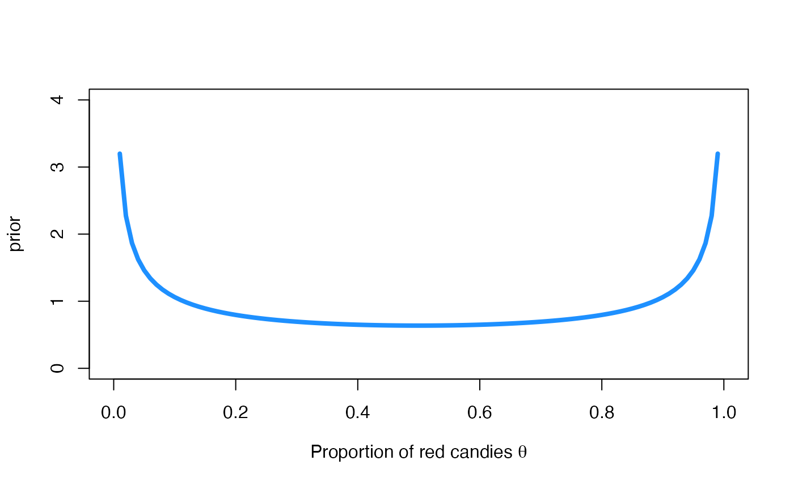

Introducing MM’s
According to Wikipedia:
M&M’s are multi-colored button-shaped chocolates, each of which has the letter “m†printed in lower case in white on one side, consisting of a candy shell surrounding a filling which varies depending upon the variety of M&M’s. The original candy has a semi-sweet chocolate filling which, upon introduction of other variations, was branded as the “plain, normal†variety.
The candy originated in the United States in 1941. They are produced in different colors, some of which have changed over the years. The candy-coated chocolate concept was inspired by a method used to allow soldiers in the Spanish Civil War (1936–1939) to carry chocolate in warm climates without it melting. A traditional milk chocolate M&M weighs about 0.91 grams and has about 4.7 calories of food energy’’.

A pile of peanut M&M’s candies. Photo by Victor Roda.
Bayesian inference for the proportion of red MM’s
The experiment: Counting red MM’s
Let’s start this practical session by making inference about the proportion of red MM’s in a very huge box. If you are following this practice in person, the instructor will give you a bag of MM’s to make the practice more fun even if we have to be a bit flexible about the theoretical conditions of the experiment. If you are working on line it will be a bit more boring but we will comply better with the theoretical conditions of the experiment.

Representation of the sampling experiment.
For those of us who physically have the bag of MM’s, the most appropriate experiment would be to take candies out of the bag one at a time and replace them, recording whether their colour is red or not, until the number of candies defined in advance is reached. We consider =20.
In case you are on line or you don’t want to carry out the experiment physically, you can use the following result of the experiment:
mm_sample <- data.frame(n = 20, r = 4) The sampling model is Binomial
Let be the random variable that describes the number of red MM’s (successes) out of the sampled. Given the proportion of red candies in the bag, is a binomial random variable with parameters and probability associated with drawing a red candy.
whose conditional probability function, expectation and variance are:
- ,
Binomial probability function for two values of and observations.
A prior distribution for
Recall that the beta distribution is conjugate with respect to the binomial probability model. If we elicit a prior beta distribution Be for , its density is
with expectation and variance
- ,
- Var
We will start by working with the non-informative prior distribution Be whose prior expectation and standard deviation is and , respectively. Its graphic is obtained via
curve(
dbeta(x, 0.5, 0.5),
col = "dodgerblue", lwd = 4,
ylim = c(0, 4),
xlab = expression(paste("Proportion of red candies ", theta)),
ylab = 'prior'
)
The likelihood function of
The likelihood function of is a function of whose expression requires the observed data . It is defined as follows
where is the observed number of successes in the sample (here, the number of red candies) of size . In our first experiment, the likelihood function of for the data is
r <- mm_sample$r
n <- mm_sample$n
curve(
choose(n, r) * x^r * (1 - x)^(n - r),
col = "darkorange", lwd = 4,
xlab = expression(paste("Proportion of red candies ", theta)),
ylab = 'likelihood'
)The posterior distribution of
The posterior distribution of is also a beta distribution with parameters
In our case, the posterior distribution of the proportion of red candies is
whose graphic is
curve(
dbeta(x, mm_sample$r + 0.5, mm_sample$n - mm_sample$r + 0.5),
col = "darkgreen", lwd = 4,
xlim = c(0, 1), ylim = c(0, 5),
xlab = expression(paste("Proportion of red candies ", theta)),
ylab = 'posterior'
) The posterior mean and posterior standard deviation of the proportion of
red candies is
The posterior mean and posterior standard deviation of the proportion of
red candies is
A 95 credible interval for is
and the posterior probability that the proportion of red candies is between 0.1 and 0.3 is
You can see these posterior summaries in the Figure below

Posterior summaries for .
The posterior predictive distribution for the results of a new experiment
Recall that the posterior predictive distribution of the number of successes in a new sample of size is a beta-binomial distribution with parameters and from the posterior distribution and the size of the new experiment. Its probability function is
with expectation and variance,
Suppose now that we are going to randomly draw new MM’s from the bag. Before performing the experiment, the posterior predictive distributions quantifies the relative plausibility of each possible outcome. It is a beta-binomial distribution with parameters and from the posterior distribution , and , which is the size of the new experiment.
library(extraDistr)
curve(
dbbinom(x, size = 10, mm_sample$r + 0.5, mm_sample$n - mm_sample$r + 0.5),
col = "purple", lwd = 4, type = 'h', n = 11,
xlim = c(0, 10), ylim = c(0, 0.4),
xlab = expression(paste("Number of red candies")),
ylab = 'probability'
)
We observe that the most likely numbers of red candies in the new sample are 1 and 2. The posterior mean and posterior standard deviation of the number of red candies is this new sample is
Time for individual work
We propose below an individual exercise that pursues that we can
consolidate the basic concepts that we have learned in the previous
theoretical session and that we have been practising in this session.
You can code the exercise yourself in R using the examples above, or use
vibass_app(1) to launch the interactive application
provided in the vibass R-package.
EXERCISE
You have two friends, Arnau and Mary, who know a little bit about Bayesian inference and a lot about MM’s. Their opinions about the proportion of red candies are expressed in terms of the following prior distributions:
How different are your two friends’ opinions on ? A good idea to answer this question would be to plot both densities and calculate the mean and standard deviation of the subsequent prior distributions.
From the results of the previous experiment ( red candies out of a total of sampled), compare the posterior distribution for that Mary and Arnau would obtain.
Compare both posterior distributions with the one we have obtained in Subsection 2.5 of the practical through their density curves, posterior means, standard deviations and 95% credibility intervals.
Compute the posterior predictive distribution for the new experiment described in Subsection 2.6 (to randomly draw new MM’s from the bag) and compare both posterior predictive distributions with the one we have obtained in Subsection 2.6 of the practical through their density curves, posterior means and standard deviations.